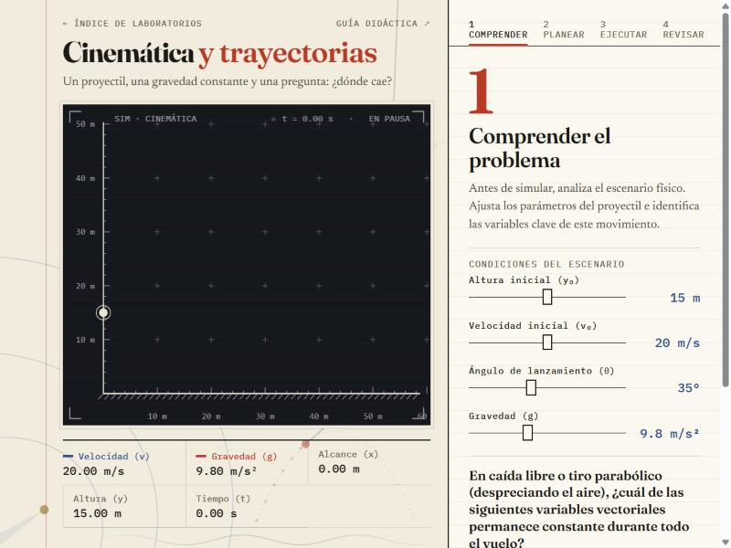
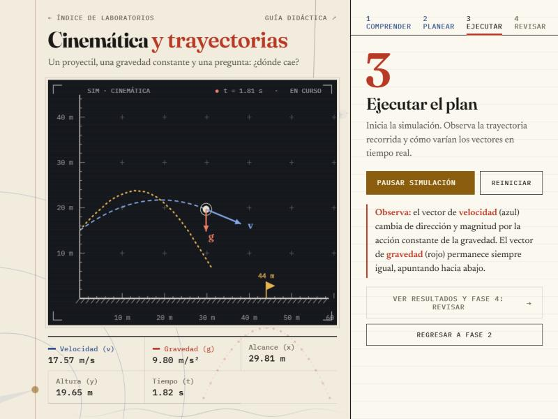
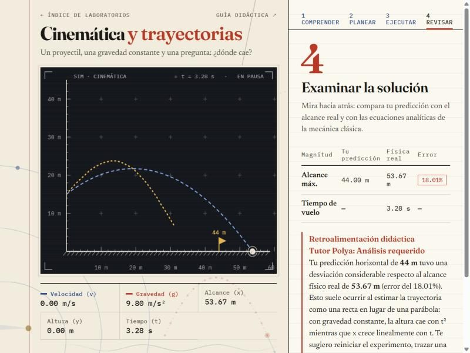

Cinemática y trayectorias
Guía didáctica del estudiante · método de Pólya · Física — UNIR
Un proyectil, una gravedad constante y una pregunta: ¿dónde cae? Esta guía te acompaña en el estudio de la caída libre y el tiro parabólico con el método de George Pólya, a partir de la investigación del profesor Marcos Chacón Castro (UNAB, 2021): experimentar para razonar por tu cuenta.
El movimiento en dos dimensiones
El movimiento de un proyectil sin resistencia del aire se puede descomponer, como vio Galileo, en dos movimientos independientes: uno horizontal y otro vertical.
Eje horizontal: movimiento rectilíneo uniforme
No hay fuerzas horizontales, así que la velocidad en x no cambia durante todo el vuelo.
vx(t) = vx0
Eje vertical: movimiento uniformemente variado
La gravedad es una aceleración constante dirigida hacia abajo (g = 9.81 m/s²) que cambia la altura y la velocidad en y de forma continua.
vy(t) = vy0 − g·t
La velocidad inicial se reparte según el ángulo de salida θ:
Tiempo de vuelo y alcance
El proyectil llega al suelo cuando y = 0. Resolviendo la ecuación cuadrática en t se obtiene el tiempo de vuelo y, con él, el alcance horizontal:
R = vx0·tvuelo
Comprender el problema
Antes de lanzar, identifica los parámetros de entrada y repasa qué magnitudes vectoriales cambian y cuáles no durante el vuelo.

En tu cuaderno · variables del escenario
| Variable | Símbolo | Unidad | Tu valor |
|---|---|---|---|
| Altura inicial | y₀ | m | |
| Velocidad inicial | v₀ | m/s | |
| Ángulo de lanzamiento | θ | ° | |
| Gravedad | g | m/s² |
¿Cuál de estas magnitudes permanece constante durante todo el vuelo: la velocidad, la aceleración o la altura? Responde en el simulador para desbloquear la Fase 2.
Concebir un plan
Formular una hipótesis antes de ver el resultado es la parte más valiosa del método. En el simulador harás dos cosas:
- Dibujar la trayectoria: haz clic dentro del lienzo y arrastra (o desliza el dedo) para trazar la curva que crees que seguirá el proyectil. Aparece en ocre, punteada.
- Predecir el alcance: con el slider, indica a cuántos metros esperas que caiga. Se marca con una banderola ocre sobre el suelo.
En tu cuaderno · cálculo previo
| Cálculo | Fórmula | Tu resultado |
|---|---|---|
| Velocidad horizontal | v₀·cos θ | m/s |
| Velocidad vertical inicial | v₀·sen θ | m/s |
| Tiempo de vuelo | (v_y0 + √(v_y0² + 2·g·y₀)) / g | s |
| Alcance predicho | R = v_x0·t_vuelo | m |
Si lanzas desde una altura y₀ > 0, ¿es simétrica la parábola? ¿Qué ángulo da el mayor alcance cuando y₀ = 0? ¿Y cuando y₀ es grande?
Ejecutar el plan
Ahora ejecutas el plan: pulsa Iniciar lanzamiento y observa las magnitudes físicas en tiempo real.

- La flecha azul de velocidad cambia de dirección y de longitud; en la cima del vuelo es horizontal.
- La flecha roja de gravedad no cambia: la aceleración es constante.
En tu cuaderno · lecturas durante el vuelo
| Instante | t (s) | x (m) | y (m) | v (m/s) |
|---|---|---|---|---|
| Salida | 0 | |||
| Cima de la trayectoria | ||||
| Impacto | 0 |
Examinar la solución
Es la etapa de autoevaluación: contrasta tu hipótesis con la física calculada y entiende de dónde vienen las desviaciones.

El Tutor Pólya valora tu error: hasta un 5 % es muy bueno y por encima del 15 % te invita a repasar las ecuaciones de x(t) e y(t). Una desviación grande suele venir de imaginar la trayectoria como una recta en lugar de una parábola.
Conclusiones esperadas
- Con gravedad constante, la velocidad horizontal no cambia y la vertical varía linealmente con el tiempo.
- La trayectoria es una parábola; la velocidad es siempre tangente a ella.
- El alcance depende de v₀, del ángulo θ y de la altura inicial y₀; sin altura inicial, el máximo está en 45°.
- La masa del proyectil no interviene: todos los cuerpos caen igual si no hay resistencia del aire.
Si añadieras resistencia del aire, ¿qué magnitud dejaría de ser constante? Predice cómo cambiarían la forma de la trayectoria y el alcance.